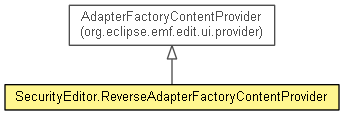

org.eclipse.emf.cdo.security.presentation
Class SecurityEditor.ReverseAdapterFactoryContentProvider
java.lang.Object
 org.eclipse.emf.edit.ui.provider.AdapterFactoryContentProvider
org.eclipse.emf.cdo.security.presentation.SecurityEditor.ReverseAdapterFactoryContentProvider
org.eclipse.emf.edit.ui.provider.AdapterFactoryContentProvider
org.eclipse.emf.cdo.security.presentation.SecurityEditor.ReverseAdapterFactoryContentProvider
- All Implemented Interfaces:
- INotifyChangedListener, org.eclipse.jface.viewers.IContentProvider, org.eclipse.jface.viewers.IStructuredContentProvider, org.eclipse.jface.viewers.ITreeContentProvider, org.eclipse.ui.views.properties.IPropertySourceProvider
- Enclosing class:
- SecurityEditor
- public class SecurityEditor.ReverseAdapterFactoryContentProvider
- extends AdapterFactoryContentProvider

- Generated
| Methods inherited from class java.lang.Object |
clone, equals, finalize, getClass, hashCode, notify, notifyAll, toString, wait, wait, wait |
SecurityEditor.ReverseAdapterFactoryContentProvider
public SecurityEditor.ReverseAdapterFactoryContentProvider(AdapterFactory adapterFactory)
-
- Generated
getElements
public Object[] getElements(Object object)
-
- Specified by:
getElements in interface org.eclipse.jface.viewers.IStructuredContentProvider- Specified by:
getElements in interface org.eclipse.jface.viewers.ITreeContentProvider- Overrides:
getElements in class AdapterFactoryContentProvider
- Generated
getChildren
public Object[] getChildren(Object object)
-
- Specified by:
getChildren in interface org.eclipse.jface.viewers.ITreeContentProvider- Overrides:
getChildren in class AdapterFactoryContentProvider
- Generated
hasChildren
public boolean hasChildren(Object object)
-
- Specified by:
hasChildren in interface org.eclipse.jface.viewers.ITreeContentProvider- Overrides:
hasChildren in class AdapterFactoryContentProvider
- Generated
getParent
public Object getParent(Object object)
-
- Specified by:
getParent in interface org.eclipse.jface.viewers.ITreeContentProvider- Overrides:
getParent in class AdapterFactoryContentProvider
- Generated
Copyright (c) 2004 - 2012 Eike Stepper (Berlin, Germany) and others.